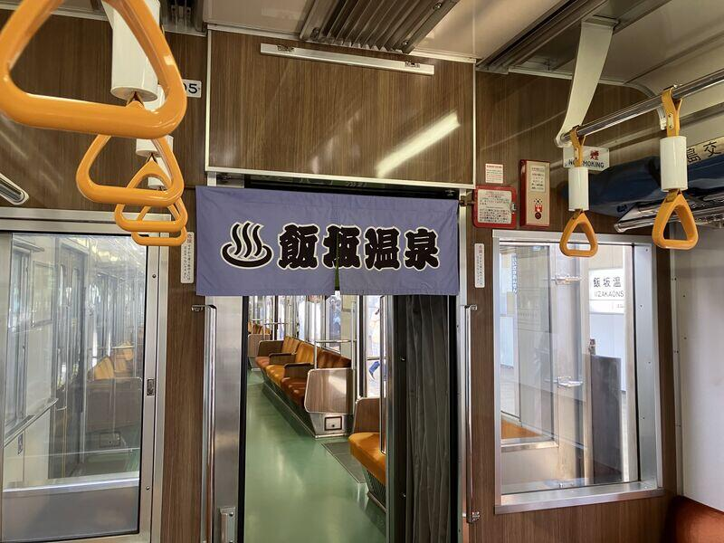
福島駅のホームで飯坂線を待つ。
ローカル線の終点、飯坂温泉まで23分。電車に乗り込んでから気づいた。ドアの上にのれんが下がっている。「飯坂温泉」の文字。なかなかやるな、と思った。
車内は静かで、乗客は数えるほど。窓の外に住宅地が広がり、少しずつ山が近くなってくる。
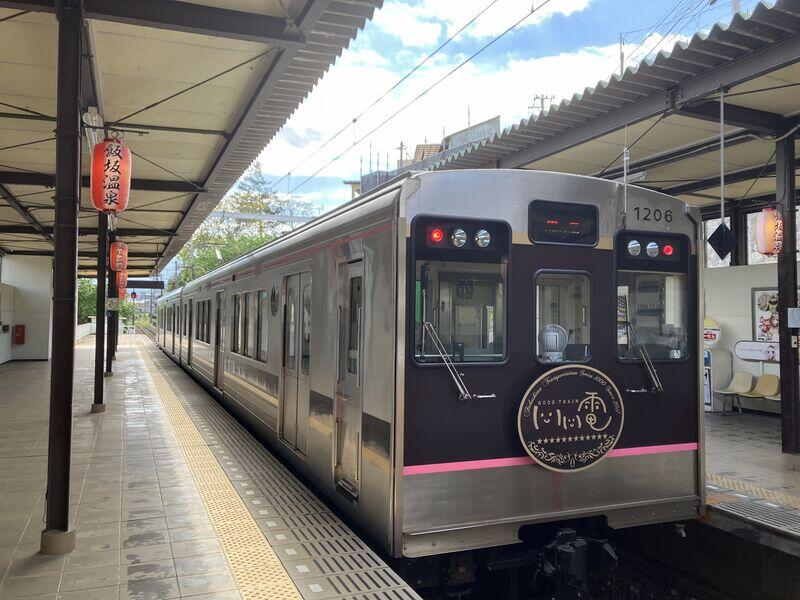
飯坂温泉駅に着いた。
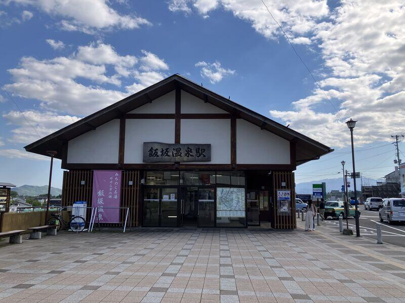
木造の小さな駅舎。「みちのく名湯」という幟が立っている。GWの午前中だったけれど、観光客がぞろぞろいる感じでもなく、適度ににぎやか。
駅を出てすぐ、橋を渡る。
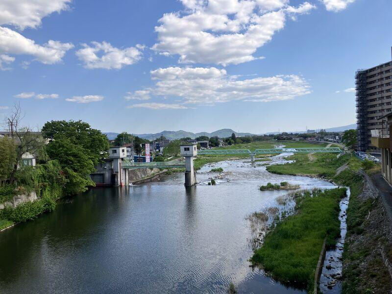
摺上川が山のほうに向かって細く伸びていた。山肌にはまだ若い緑。青空と、白い雲。しばらく眺めていた。
温泉街のメインストリートを少し外れて、旧堀切邸に入った。
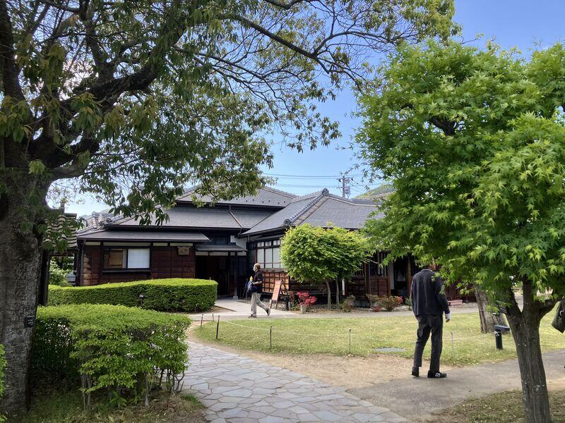
飯坂を代表する豪商の旧邸宅で、今は無料で開放されている。
縁側に立つと、中庭が静かに広がっていた。障子越しに光が差し込んでいる。砂利を踏む音がして、誰かが歩いていく。
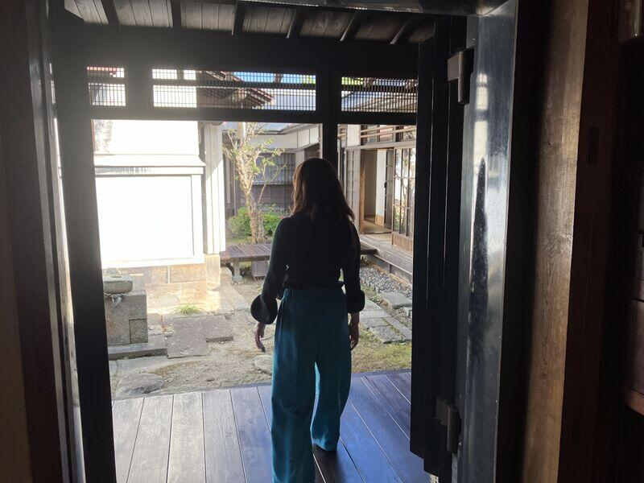
奥の部屋の壁には大きな書。「楽」という字が、おおらかに書かれていた。
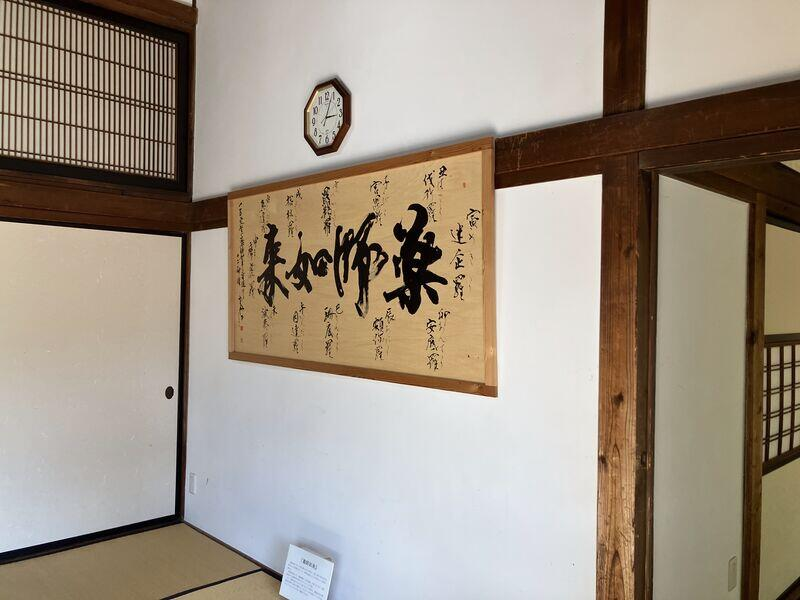
急ぐことも何もない場所だった。
「新蔵」という表札のかかった蔵もあった。木の看板が新しく、丁寧に管理されているのがわかる。
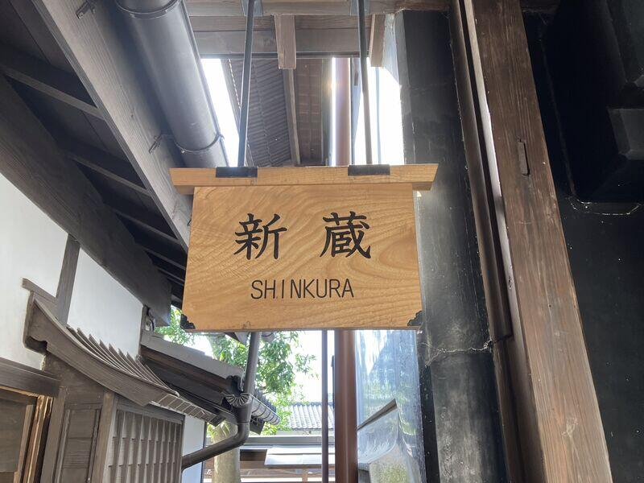
庭のザイフリボクは、前日の強風で倒れていた。コーンで囲まれて小さな張り紙がしてある。「危険ですので周辺には立ち入らないようお願いいたします」。
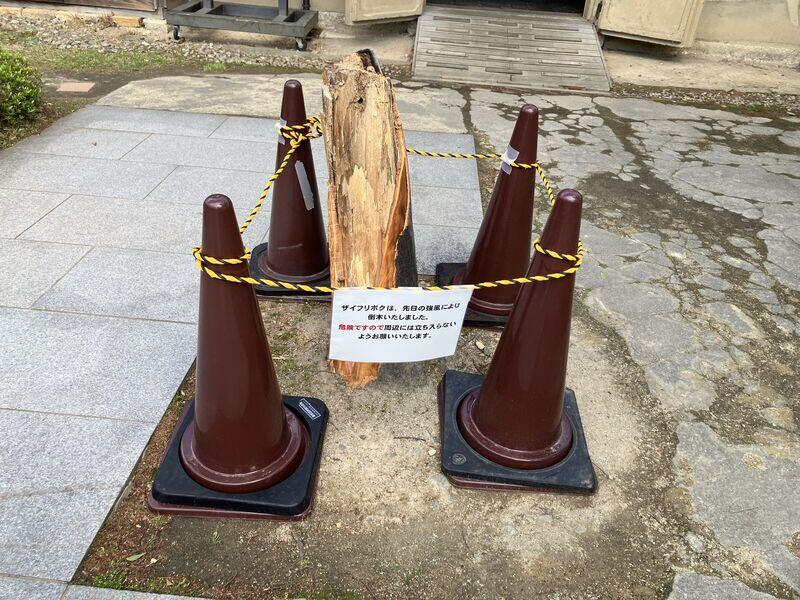
そういうことも、ある。
昼過ぎ、オノデラ百貨店に立ち寄った。
温泉街の中にあるカフェ兼コワークスペース。ここで飯坂パフェを食べた。写真を撮り忘れた。食べることに集中していたのだと思う。コーヒーも飲んで、少し作業をして、また外に出た。
川沿いの道を歩いて駅に戻る。
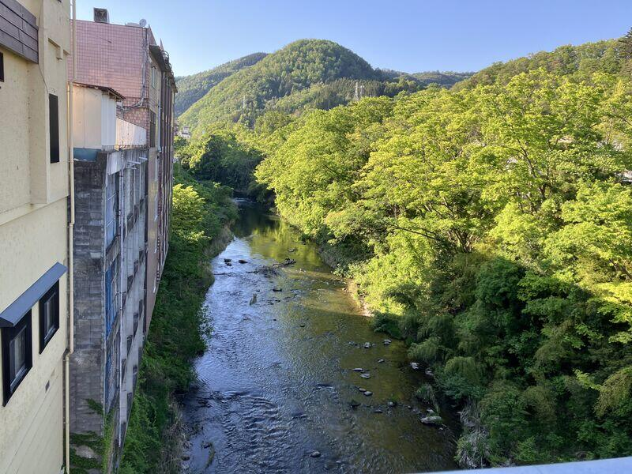
旅館が川に沿って並んでいる。山が近い。緑が濃い。川の水は透明で、石がよく見えた。
飯坂温泉駅のホームは、線路の終点だった。
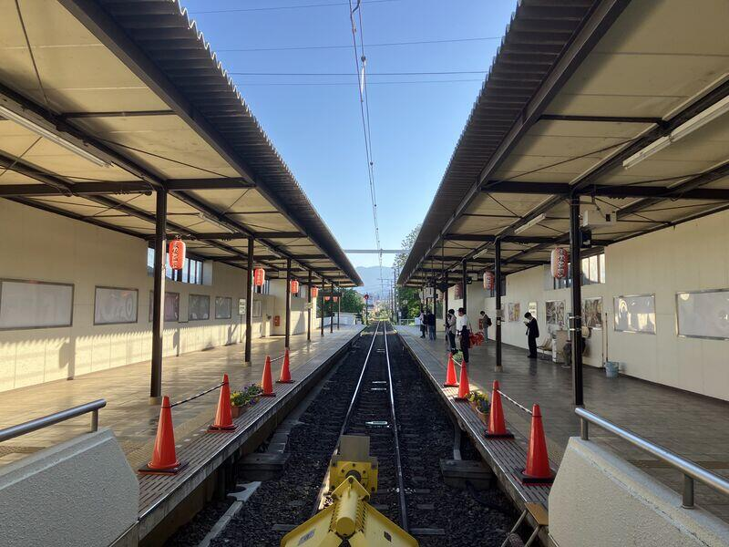
赤い提灯が並んで、奥まで続いている。終着駅のホームはどこか落ち着く。電車がくるまで、しばらくそこに立っていた。
福島から20分ちょっと。日帰りで十分すぎる。
旧堀切邸は無料で、温泉街の散策も気負いがいらない。観光地だけど、いい意味で力が抜けている場所だった。
また来てもいいと思った。次は温泉に入ろう。